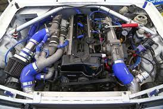
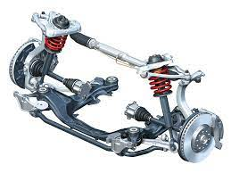
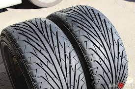

Двигатель Применяются как большеобъемные атмосферные двигатели, так и турбированные двигатели, настроенные таким образом, что крутящий момент распределен равномерно в зоне 3000 — 8000 оборотов. Нагрузки очень высоки, поэтому дополнительные доработки направлены не только на повышение мощности, но и на увеличение стойкости к нагрузкам и более высоким температурным режимам. Зачастую вместо доработки существующего мотора в дрифте применяется так называемый «свап» (swap) — замена двигателя на мощный и с большим потенциалом для дальнейшего улучшения

Подвеска Используются жёсткие укороченные пружины со спортивными стойками либо готовые наборы койловеров (амортизатор и пружина в едином узле, регулируемые по высоте и по жёсткости), более жёсткие стабилизаторы поперечной устойчивости. Развал передних колёс устанавливается сильно отрицательный (идеальным считается 2,8 градусов негативного развала), для более точного управления автомобилем в заносе. Развал и схождение задних колёс сводится к нулю. Очень нелишне будет усилить кузов распорками. Также, чтобы добиться большего угла в заносе, дорабатывают систему рулевого управления, увеличивая выворот колес. Важным элементом является расширение колеи, причём колея передних колёс должна быть равна колее задних колёс, либо немного больше. Угол Аккермана делают отрицательным и подбирают к определённым поворотам для более стабильного поведения автомобиля в заносе.

Шины Считается, что на передней оси от шин требуется больший коэффициент сцепления, что зачастую обусловливает выбор пилотами спортивных шин с гладким протектором слик и полуслик. Задняя же ось с одной стороны должна скользить, а с другой также давать сцепление — и здесь выбор обусловлен мощностью автомобиля, предпочтениями пилота и/или способом использования. Например, автомобиль с мощностью 400 л. с. и выше требует большего сцепления, но на тренировках пилоты предпочитают использовать в целях экономии дешевые жесткие шины, которые будут плохо цепляться за асфальт, легко срываться в занос и долго стираться. Кроме сцепления и износостойкости большую роль играет дым, исторгаемый из-под колес во время заноса. Количество дыма влияет на оценку пилота судьями. Машины с большой мощностью двигателя требуют шины с более прочной конструкцией, что приближает их к спортивным моделям.

Больше информации по ссылке (нажмите чтобы перейти)